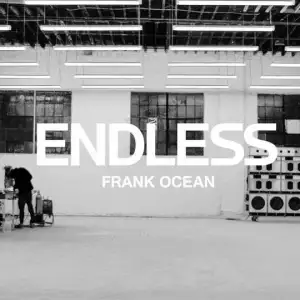
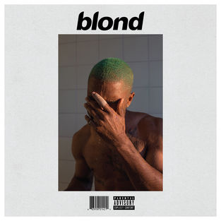

Quem é?
Frank Ocean é um cantor, compositor e produtor musical americano, conhecido por sua abordagem inovadora e experimental da música R&B além de sua habilidade de combinar elementos de soul, eletrônica e pop. Nascido Christopher Edwin Breaux em 28 de outubro de 1987, em Long Beach, Califórnia, ele começou sua carreira na música como compositor, escrevendo para outros artistas antes de lançar sua própria música.
Discografia
Nostalgia, Ultra (2011). foi a mixtape que marcou a estreia de Frank Ocean como artista solo. O projeto se destaca por letras sinceras e emotivas que exploram temas como nostalgia, amor e relacionamentos. Contém o total de 14 faixas, Algumas faixas usam samples inusitados, como "Hotel California" do Eagles (American Wedding) e "Electric Feel" do MGMT (Nature Feels), demonstrando a ousadia e originalidade do artista.

Primeiro álbum de estúdio de Frank Ocean, Channel Orange (2012) consolidou sua reputação como um dos artistas mais inovadores da música contemporânea. e venceu o Grammy de Melhor Álbum Urbano Contemporâneo em 2013. O álbum aborda temas profundos, como amor não correspondido, sexualidade, desigualdade social e consumismo. Possue o total de 17 faixas, É repleto de faixas icônicas, como Thinkin Bout You, Pyramids e Super Rich Kids, que demonstram sua habilidade de combinar storytelling lírico com arranjos musicais sofisticados. O álbum apresenta uma sonoridade rica, com elementos de R&B, jazz, funk e pop.
Endless (2016) é um álbum visual lançado como um projeto experimental. A obra combina música e arte visual, apresentando uma performance contínua de Frank Ocean construindo uma escada em um ambiente industrial minimalista. Musicalmente, o projeto explora sonoridades ambientais, fragmentadas e melancólicas, refletindo sua natureza mais conceitual. Tendo apenas 19 faixas, As faixas são intercaladas por transições suaves, criando uma experiência imersiva. Embora tenha sido menos promovido que outros trabalhos, Endless demonstra a versatilidade artística de Ocean.
Blonde é um marco na música contemporânea e é amplamente considerado o trabalho mais pessoal e experimental de Frank Ocean. O álbum aborda temas de amor, espiritualidade, perda e identidade com uma profundidade emocional única. Musicalmente, é caracterizado por sua abordagem minimalista e inovadora, destacando o uso de vozes moduladas, harmonias vocais complexas e letras introspectivas. Lançado em 2016, contém 17 faixas, incluindo clássicos como Nikes, Ivy e Nights. "Blonde" transcende gêneros, consolidando Ocean como uma figura singular no panorama musical.